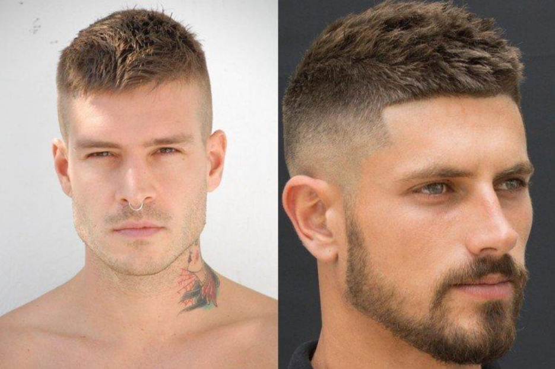
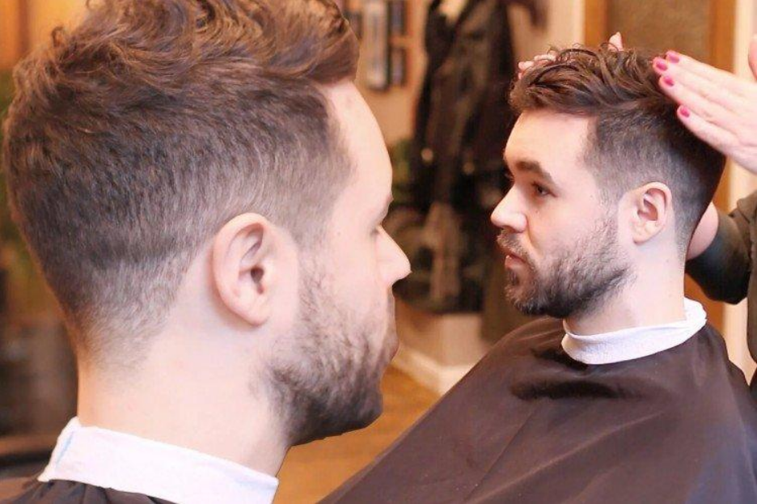
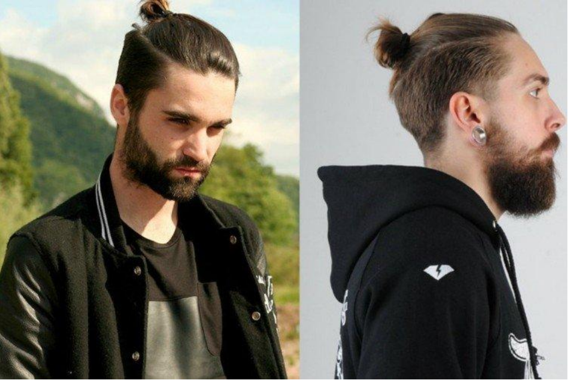

Название: Полубокс
Время услуги: 45-60 минут
Стоимость: 2000 рублей
Одна из самых полпулярных стрижек. Сочитание коротких висков и слегка небрежного верха.Просто и со вкусом.

Название: Фейд
Время услуги: 45-60 минут
Стоимость: 2000 рублей
Еще один очень универсальный вариант,особенность этой стрижки - очень плавный переход, как неуловимая тень

Название: Топ кнот
Время услуги: 60-75 минут
Стоимость: 2500 рублей
Пучок с выбритыми висками. Красиво подойдет для обладателей характерно "грубых" черт лица.